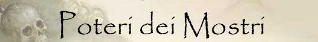
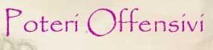
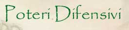
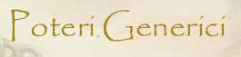

Nonostante ogni creatura mostruosa possa astrattamente possedere poteri unici o varianti particolari di poteri comuni, non di rado alcuni poteri mostruosi sono posseduti da diverse creature. Per tale motivo in questa sezione saranno classificati i poteri più comuni posseduti dalle creature mostruose.

MODIFICATORI AL TIRO PER COLPIRE
ISTINTO PREDATORIO (Moderate Special Ability): La creatura possiede un forte istinto predatorio, per tale motivo costei riceve un bonus costante di +1 ai suoi tiri per colpire.
IMPETO SUPERIORE (Superior Special Ability): Questa creatura riesce a colpire i propri avversari con impeto superiore, per tale motivo riceve un bonus costante di +2 ai suoi tiri per colpire.
IMPETO ECCEZIONALE (Powerful Special Ability): Questa creatura riesce a colpire i propri avversari con impeto eccezionale, per tale motivo riceve un bonus costante di +3 ai suoi tiri per colpire.
IMPETO STRAORDINARIO (Extraordinary Special Ability): Questa creatura riesce a colpire i propri avversari con impeto straordinario, impeto, per tale motivo riceve un bonus costante di +4 ai suoi tiri per colpire.
MODIFICATORI ALL'INIZIATIVA DEGLI ATTACCHI
ATTACCO VELOCE INFERIORE (Least Special Ability): Questa creatura è in grado di effettuare i propri attacchi più velocemente del normale. Costei quindi riceve un bonus all'iniziativa dei propri attacchi pari a - 1, fermo restando il limite minimo di +1 al fattore iniziativa del proprio attacco. Inoltre, qualora i tiri di iniziativa sugli attacchi effettuati dalla creatura abbiano un risultato superiore, questi saranno considerati pari a 9.
ATTACCO VELOCE MINORE (Lesser Special Ability): Questa creatura è in grado di effettuare i propri attacchi più velocemente del normale. Costei quindi riceve un bonus all'iniziativa dei propri attacchi pari a - 2, fermo restando il limite minimo di +1 al fattore iniziativa del proprio attacco. Inoltre, qualora i tiri di iniziativa sugli attacchi effettuati dalla creatura abbiano un risultato superiore, questi saranno considerati pari ad 9.
ATTACCO VELOCE (Moderate Special Ability): Questa creatura è in grado di effettuare i propri attacchi più velocemente del normale. Costei quindi riceve un bonus all'iniziativa dei propri attacchi pari a - 3, fermo restando il limite minimo di +1 al fattore iniziativa del proprio attacco. Inoltre, qualora i tiri di iniziativa sugli attacchi effettuati dalla creatura abbiano un risultato superiore, questi saranno considerati pari ad 8.
ATTACCO VELOCE SUPERIORE (Superior Special Ability): Questa creatura è in grado di effettuare i propri attacchi più velocemente del normale. Costei quindi riceve un bonus all'iniziativa dei propri attacchi pari a - 4, fermo restando il limite minimo di +1 al fattore iniziativa del proprio attacco. Inoltre, qualora i tiri di iniziativa sugli attacchi effettuati dalla creatura abbiano un risultato superiore, questi saranno considerati pari a 8.
ATTACCO VELOCE STRAORDINARIO (Powerful Special Ability): Questa creatura è in grado di effettuare i propri attacchi più velocemente del normale. Costei quindi riceve un bonus all'iniziativa dei propri attacchi pari a - 5, fermo restando il limite minimo di +1 al fattore iniziativa del proprio attacco. Inoltre, qualora i tiri di iniziativa sugli attacchi effettuati dalla creatura abbiano un risultato superiore, questi saranno considerati pari a 7.
PUNTI COMBATTIMENTO
ABILITA'
TATTICA
(Least Special
Ability):
La creatura è particolarmente
abile nel combattimento per questo motivo riceve permanentemente
3 punti combattimento
supplementari.
ESPERIENZA
TATTICA
(Lesser Special
Ability):
La creatura è particolarmente
abile nel combattimento per questo motivo riceve permanentemente
6 punti combattimento
supplementari.
MAESTRIA TATTICA
(Moderate Special
Ability):
La creatura è particolarmente
abile nel combattimento per questo motivo riceve permanentemente
9 punti combattimento
supplementari.
UTILIZZO DI ARMI
COMBATTERE CON ARMI GRANDI (Moderate Special Ability) : Per la loro grande taglia e forza queste creature possono utilizzare armi di size large con una sola mano. In questo caso costoro ottengono un bonus di +2 ai danni (bonus dovuto alla forza della creatura) e possono utilizzare anche uno scudo. Alternativamente, queste creature possono utilizzare tali armi a due mani, ottenendo in questo caso un bonus di -2 all'iniziativa e di un bonus complessivo di +5 ai danni (bonus dovuto alla forza della creatura).
ATTACCHI SUPPLEMENTARI
MORDERE LA VITTIMA AFFERRATA (Moderate Special Ability): Questa creatura è in grado di utilizzare i propri attacchi di base per stringere l'avversario e morderlo con ferocia. Qualora, infatti, questa creatura colpisca con entrambi i suoi attacchi lo stesso avversario, la stessa potrà effettuare anche un attacco supplementare con il proprio morso contro la medesima vittima. In particolare, questo attacco simultaneo di morso effettuato contro il medesimo avversario riceverà un bonus di +2 al tiro per colpire e provocherà 2d4+2 danni da taglio.
SCATTO MUSCOLARE (Lesser Special Ability): In alcune occasioni, durante le battaglie, questa creatura può effettuare sorprendenti scatti muscolari velocizzando i propri attacchi. Quando, durante un combattimento, questa creatura effettua un tiro per l'iniziativa pari od inferiore a 2 costei potrà effettuare, unicamente contro uno degli avversari che stava precedentemente attaccando, un attacco extra, con il suo morso, alla fine del round in corso.
SBRANARE [MORSO] (Lesser Special Ability): Quando questa creatura colpisce il proprio avversario con l'attacco indicato può attaccare nuovamente la medesima creatura con lo stesso attacco subendo una penalità di - 1 al tiro per colpire. Si consideri quest'attacco come un attacco multiplo successivo non simultaneo.
SBRANARE SUPERIORE [MORSO] (Moderate Special Ability): Quando questa creatura colpisce il proprio avversario con l'attacco indicato può attaccare nuovamente la medesima creatura con lo stesso attacco subendo una penalità di - 1 al tiro per colpire. Se anche questo secondo attacco va a segno la creatura potrà effettuare un terzo attacco subendo allo stesso una penalità complessiva di di - 2 al tiro per colpire. Si consideri questi attacchi come un attacchi multipli successivo non simultaneo.
SBRANARE STRAORDINARIO [MORSO] (Superior Special Ability): Quando questa creatura colpisce il proprio avversario con l'attacco indicato può attaccare nuovamente la medesima creatura con lo stesso attacco subendo una penalità di - 1 al tiro per colpire. Se il secondo attacco va a segno la creatura potrà effettuare un terzo attacco subendo allo stesso una penalità complessiva di di - 2 al tiro per colpire. Se anche questo terzo attacco va a segno la creatura potrà effettuare un quarto attacco subendo allo stesso una penalità complessiva di di - 3 al tiro per colpire. Si consideri questi attacchi come un attacchi multipli successivo non simultaneo.
VORACITÀ
INFERIORE
[MORSO]
(Least Special Ability):
La creatura è particolarmente vorace e se, nel corso del round di combattimento,
è particolarmente rapida può riuscire ad attaccare una seconda volta. In
particolare quando questa creatura effettua un
tiro per l'iniziativa pari od inferiore a
2 potrà effettuare un attacco
multiplo non simultaneo con l'attacco indicato.
VORACITÀ
[MORSO]
(Lesser Special Ability):
La creatura è particolarmente vorace e se, nel corso del round di combattimento,
è particolarmente rapida può riuscire ad attaccare una seconda volta. In
particolare quando questa creatura effettua un
tiro per l'iniziativa pari od inferiore a
4 potrà effettuare un attacco
multiplo non simultaneo con l'attacco indicato.
VORACITÀ
SUPERIORE
[MORSO]
(Moderate Special Ability):
La creatura è particolarmente vorace e se, nel corso del round di combattimento,
è particolarmente rapida può riuscire ad attaccare una seconda volta. In
particolare quando questa creatura effettua un
tiro per l'iniziativa pari od inferiore a
6 potrà effettuare un attacco
multiplo non simultaneo con l'attacco indicato.
BONUS PER GLI ATTACCHI MULTIPLI SIMULTANEI
STRETTA PER DIVORARE (Lesser Special Ability): Questa creatura è in grado di utilizzare i propri artigli per stringere l'avversario e morderlo con ferocia. Qualora, infatti, questa creatura colpisce con entrambi gli artigli lo stesso avversario, lo terrà stretto e potrà morderlo con incredibile accuratezza. In particolare, l'attacco simultaneo di morso eventualmente effettuato contro il medesimo avversario riceverà un bonus di +4 al tiro per colpire e di +2 al dado base delle ferite.
DANNI SUPPLEMENTARI AGLI ATTACCHI FISICI
COLPO DI SFONDAMENTO (Lesser Special Ability): Una volta al round, decidendolo nella fase delle intenzioni, la creatura può utilizzare questa manovra di combattimento quando attacca con la propria arma. In pratica, la creatura carica il colpo con incredibile violenza ricevendo una penalità al tiro per colpire di -1 ed una penalità all'iniziativa di +2. Se il tiro per colpire ha successo, la creatura riceve un bonus di +2 ai danni inflitti con tale attacco. Si noti che questi danni supplementari saranno considerati a tutti gli effetti danni dovuti alla forza dell'attaccante.
COLPO DI SFONDAMENTO SUPERIORE (Superior Special Ability): Una volta al round, decidendolo nella fase delle intenzioni, la creatura può utilizzare questa manovra di combattimento quando attacca con la propria arma. In pratica, la creatura carica il colpo con incredibile violenza ricevendo una penalità al tiro per colpire di -2 ed una penalità all'iniziativa di +3. Se il tiro per colpire ha successo, la creatura riceve un bonus di +4 ai danni inflitti con tale attacco. Si noti che questi danni supplementari saranno considerati a tutti gli effetti danni dovuti alla forza dell'attaccante.
LACERAZIONE INFERIORE (Lesser Special Ability): I denti di questo predatore sono lunghi ed appuntiti come coltelli. Qualora questa creatura attacca una vittima con il proprio morso colpendola con particolare precisione la stessa potrà lacerarne a fondo il corpo. Ciò avviene quando questa creatura colpisce una vittima con il suo morso effettuando un tiro per colpire naturale da 19 a 20. Quando ciò si verifica l'attacco provocherà il 1d6 danni supplementari. Tutti i danni saranno considerati danni da taglio e provenienti da un unico attacco (ad es. ai fini dei critici e dei danni alla corazza).
LACERAZIONE
(Moderate Special
Ability): I denti di questo
predatore sono lunghi ed appuntiti come coltelli. Qualora questa creatura
attacca una vittima
con il proprio
morso
colpendola con particolare precisione la
stessa potrà lacerarne a fondo il corpo. Ciò avviene quando questa creatura
colpisce una vittima con il suo morso effettuando un
tiro per colpire naturale da 18 a
20.
Quando ciò si verifica l'attacco provocherà il
1d8 danni supplementari.
Tutti i danni saranno considerati danni da taglio e provenienti da un unico
attacco (ad es. ai fini dei critici e dei danni alla corazza).
LACERAZIONE
SUPERIORE (Superior Special
Ability): I denti di questo
predatore sono lunghi ed appuntiti come coltelli. Qualora questa creatura
attacca una vittima
con il proprio
morso
colpendola con particolare precisione la
stessa potrà lacerarne a fondo il corpo. Ciò avviene quando questa creatura
colpisce una vittima con il suo morso effettuando un
tiro per colpire naturale da 17 a
20.
Quando ciò si verifica l'attacco provocherà il
1d10 danni supplementari.
Tutti i danni saranno considerati danni da taglio e provenienti da un unico
attacco (ad es. ai fini dei critici e dei danni alla corazza).
COLPO STORDENTE INFERIORE [CODA] (Lesser Special Ability): Qualora questa creatura attacca una vittima con l'attacco indicato colpendola con particolare precisione la violenza del colpo potrà essere tale da poter stordire la vittima. Ciò avviene quando questa creatura colpisce una vittima effettuando un tiro per colpire naturale da 19 a 20. Quando ciò si verifica, la creatura riceverà un bonus di +1 al dado base dei danni inflitti dall'attacco (bonus che quindi migliora il risultato del dado tirato entro il limite del risultato massimo del dado stesso) mentre la vittima dovrà superare un tiro salvezza su robustezza. Se il tiro salvezza fallisce la vittima risulterà stordita fino alla fine del round in corso ed incapacitata per tutto il round successivo. Si noti che esseri non dotati di un corpo organico di tipo animale (si pensi ad esempio alle melme, ai vegetali, ai non morti ed ai costruiti) sono immuni al secondo effetto di questo potere speciale.
COLPO STORDENTE [CODA] (Moderate Special Ability): Qualora questa creatura attacca una vittima con l'attacco indicato colpendola con particolare precisione la violenza del colpo potrà essere tale da poter stordire la vittima. Ciò avviene quando questa creatura colpisce una vittima effettuando un tiro per colpire naturale da 18 a 20. Quando ciò si verifica, la creatura riceverà un bonus di +2 al dado base dei danni inflitti dall'attacco (bonus che quindi migliora il risultato del dado tirato entro il limite del risultato massimo del dado stesso) mentre la vittima dovrà superare un tiro salvezza su robustezza. Se il tiro salvezza fallisce la vittima risulterà stordita fino alla fine del successivo round. Se, invece, il tiro salvezza riesce la vittima sarà comunque incapacitata per il resto del round in corso. Si noti che esseri non dotati di un corpo organico di tipo animale (si pensi ad esempio alle melme, ai vegetali, ai non morti ed ai costruiti) sono immuni al secondo effetto di questo potere speciale.
COLPO STORDENTE SUPERIORE [CODA] (Superior Special Ability): Qualora questa creatura attacca una vittima con l'attacco indicato colpendola con particolare precisione la violenza del colpo potrà essere tale da poter stordire la vittima. Ciò avviene quando questa creatura colpisce una vittima effettuando un tiro per colpire naturale da 17 a 20. Quando ciò si verifica, la creatura riceverà un bonus di +3 al dado base dei danni inflitti dall'attacco (bonus che quindi migliora il risultato del dado tirato entro il limite del risultato massimo del dado stesso) mentre la vittima dovrà superare un tiro salvezza su robustezza. Se il tiro salvezza fallisce la vittima risulterà stordita per 1d2+1 round. Se, invece, il tiro salvezza riesce la vittima sarà comunque incapacitata fino alla fine del round successivo. Si noti che esseri non dotati di un corpo organico di tipo animale (si pensi ad esempio alle melme, ai vegetali, ai non morti ed ai costruiti) sono immuni al secondo effetto di questo potere speciale.
DILANIARE INFERIORE (Least Special Ability): Qualora questa creatura colpisce con entrambi gli artigli lo stesso avversario ne dilania il corpo infilando gli artigli nello stesso per poi allargare con forza le possenti zampe producendo 1d6 danni da lacerazione supplementari. Creature non dotate di un comune corpo di carne sono immuni agli effetti di questo attacco speciale (ad esempio i costruiti, eccetto quelli di carne, gli elementali, gli scheletri, le creature incorporee, le melme ecc...).
DILANIARE (Lesser Special Ability): Qualora questa creatura colpisce con entrambi gli artigli lo stesso avversario ne dilania il corpo infilando gli artigli nello stesso per poi allargare con forza le possenti zampe producendo 3d3 danni da lacerazione supplementari. Creature non dotate di un comune corpo di carne sono immuni agli effetti di questo attacco speciale (ad esempio i costruiti, eccetto quelli di carne, gli elementali, gli scheletri, le creature incorporee, le melme ecc...).
DILANIARE SUPERIORE (Moderate Special Ability): Qualora questa creatura colpisce con entrambi gli artigli lo stesso avversario ne dilania il corpo infilando gli artigli nello stesso per poi allargare con forza le possenti zampe producendo 2d6 danni da lacerazione supplementari. Creature non dotate di un comune corpo di carne sono immuni agli effetti di questo attacco speciale (ad esempio i costruiti, eccetto quelli di carne, gli elementali, gli scheletri, le creature incorporee, le melme ecc...).
IMPALAMENTO INFERIORE [CORNATA] (Lesser Special Ability): Qualora la creatura colpisce particolarmente a fondo con l'attacco indicato un avversario di taglia ricompreso tra Small e Large costei impalerà letteralmente il corpo della vittima. In pratica, ciò avviene quando questa creatura colpisce una vittima con l'attacco indicato effettuando un tiro per colpire naturale pari a 20. Quando ciò si verifica la creatura riceverà un bonus di +2 al dado base delle ferite prodotto dall'attacco (si tratta quindi di un bonus che è applicato al dado di danno entro il limite del risultato massimo del dado stesso). La vittima impalata si considererà, inoltre incapacitata e non potrà spostarsi dalla posizione occupata fino a che resterà in tale stato. All'inizio del round successivo (si consideri una non azione effettuata prima della fase delle intenzioni ma dopo la fase di attesa) la vittima dovrà superare un tiro salvezza su riflessi (ai quali si applicheranno anche i modificatori dovuti alla differenza di livello tra la vittima e la creatura). Se il tiro riesce la creatura sarà liberata, altrimenti si considererà ancora impalata per tutto il round in corso potendo provare a liberarsi solo nel round successivo. Fino a che la vittima resta impalata, dunque, questa creatura potrà attaccare unicamente costei con l'attacco indicato e la vittima subirà al momento dell'attacco ed indipendentemente dall'esito dello stesso 1d4 danni ulteriori da punta. Alla fine di ogni round la creatura può sempre decidere di liberare la vittima impalata.
IMPALAMENTO [CORNATA] (Moderate Special Ability): Qualora la creatura colpisce particolarmente a fondo con l'attacco indicato un avversario di taglia ricompreso tra Small e Large costei impalerà letteralmente il corpo della vittima. In pratica, ciò avviene quando questa creatura colpisce una vittima con l'attacco indicato effettuando un tiro per colpire naturale da 19 a 20. Quando ciò si verifica la creatura riceverà un bonus di 1d6 al dado base delle ferite prodotto dall'attacco (si tratta quindi di un bonus che è applicato al dado di danno entro il limite del risultato massimo del dado stesso). La vittima impalata si considererà, inoltre incapacitata e non potrà spostarsi dalla posizione occupata fino a che resterà in tale stato. All'inizio del round successivo (si consideri una non azione effettuata prima della fase delle intenzioni ma dopo la fase di attesa) la vittima dovrà superare un tiro salvezza su riflessi (ai quali si applicheranno anche i modificatori dovuti alla differenza di livello tra la vittima e la creatura). Se il tiro riesce la creatura sarà liberata, altrimenti si considererà ancora impalata per tutto il round in corso potendo provare a liberarsi solo nel round successivo. Fino a che la vittima resta impalata, dunque, questa creatura potrà attaccare unicamente costei con l'attacco indicato e la vittima subirà al momento dell'attacco ed indipendentemente dall'esito dello stesso 1d6 danni ulteriori da punta. Alla fine di ogni round la creatura può sempre decidere di liberare la vittima impalata.
IMPALAMENTO SUPERIORE [CORNATA] (Superior Special Ability): Qualora la creatura colpisce particolarmente a fondo con l'attacco indicato un avversario di taglia ricompreso tra Small e Large costei impalerà letteralmente il corpo della vittima. In pratica, ciò avviene quando questa creatura colpisce una vittima con l'attacco indicato effettuando un tiro per colpire naturale da 18 a 20. Quando ciò si verifica la creatura riceverà un bonus di 2d6 al dado base delle ferite prodotto dall'attacco (si tratta quindi di un bonus che è applicato al dado di danno entro il limite del risultato massimo del dado stesso). La vittima impalata si considererà, inoltre incapacitata e non potrà spostarsi dalla posizione occupata fino a che resterà in tale stato. All'inizio del round successivo (si consideri una non azione effettuata prima della fase delle intenzioni ma dopo la fase di attesa) la vittima dovrà superare un tiro salvezza su riflessi (ai quali si applicheranno anche i modificatori dovuti alla differenza di livello tra la vittima e la creatura). Se il tiro riesce la creatura sarà liberata, altrimenti si considererà ancora impalata per tutto il round in corso potendo provare a liberarsi solo nel round successivo. Fino a che la vittima resta impalata, dunque, questa creatura potrà attaccare unicamente costei con l'attacco indicato e la vittima subirà al momento dell'attacco ed indipendentemente dall'esito dello stesso 1d8 danni ulteriori da punta. Alla fine di ogni round la creatura può sempre decidere di liberare la vittima impalata.
INCENERIMENTO INFERIORE (Lesser Special Ability) [MORSO]: Quando questa creatura attacca un avversario effettuando, con l'attacco indicato, un tiro per colpire naturale da 19 a 20 la vittima sarà avvolta dalle fiamme subendo 1d3+2 danni supplementari da fuoco magico.
INCENERIMENTO (Moderate Special Ability) [MORSO]: Quando questa creatura attacca un avversario effettuando, con l'attacco indicato, un tiro per colpire naturale da 18 a 20 la vittima sarà avvolta dalle fiamme subendo 1d4+4 danni supplementari da fuoco magico.
INCENERIMENTO SUPERIORE (Superior Special Ability) [MORSO]: Quando questa creatura attacca un avversario effettuando, con l'attacco indicato, un tiro per colpire naturale da 17 a 20 la vittima sarà avvolta dalle fiamme subendo 1d6+4 danni supplementari da fuoco magico.
PERFORAZIONE INFERIORE (Lesser Special Ability): In alcuni casi la creatura è capace di perforare a fondo ed in profondità il proprio avversario conficcando le proprie radici nel corpo di quest'ultimo. Ciò avviene quando questa creatura colpisce una vittima con il suo morso effettuando un tiro per colpire naturale da 19 a 20. Quando ciò si verifica l'attacco provocherà il 1d6 danni supplementari. Tutti i danni saranno considerati danni da punta e provenienti da un unico attacco (ad es. ai fini dei critici e dei danni alla corazza).
PERFORAZIONE (Moderate Special Ability): In alcuni casi la creatura è capace di perforare a fondo ed in profondità il proprio avversario conficcando le proprie radici nel corpo di quest'ultimo. Ciò avviene quando questa creatura colpisce una vittima con il suo morso effettuando un tiro per colpire naturale da 18 a 20. Quando ciò si verifica l'attacco provocherà il 1d8 danni supplementari. Tutti i danni saranno considerati danni da punta e provenienti da un unico attacco (ad es. ai fini dei critici e dei danni alla corazza).
PERFORAZIONE SUPERIORE (Superior Special Ability): In alcuni casi la creatura è capace di perforare a fondo ed in profondità il proprio avversario conficcando le proprie radici nel corpo di quest'ultimo. Ciò avviene quando questa creatura colpisce una vittima con il suo morso effettuando un tiro per colpire naturale da 17 a 20. Quando ciò si verifica l'attacco provocherà il 1d10 danni supplementari. Tutti i danni saranno considerati danni da punta e provenienti da un unico attacco (ad es. ai fini dei critici e dei danni alla corazza).
SECREZIONE ACIDA (Moderate Special Ability) [MORSO]: Quando questa creatura attacca un avversario effettuando, con l'attacco indicato, un tiro per colpire naturale da 17 a 20 la vittima sarà cosparsa da un fortissimo acido in grado di danneggiare i tessuti organici e subirà 1d3+2 danni supplementari da acido.
ATTACCHI SPECIALI A DISTANZA
SCAGLIARE PIETRE (Moderate Special Ability): In luogo di effettuare attacchi in corpo a corpo i Giganti delle Creste Rocciose possono scagliare massi sui loro avversari. Questi giganti possono scagliare massi alle seguenti distanze: 30 metri (distanza corta), 45 metri (gittata lunga -2 Thac0), 60 metri (gittata lunga -5 Thac0). Si tratta di un attacco ad un singolo bersaglio che richiede regolare tiro per colpire. Se il tiro per colpire ha successo la vittima subisce 1d12 danni da botta. Solitamente ogni Gigante delle Creste Rocciose porta con se 1d3+2 massi da poter scagliare contro gli avversari in caso di pericolo.
LANCIO DI SPINE (Superior Special Ability): Oltre ad effettuare i comuni attacchi, questa creatura può lanciare un ammasso di grosse spine contro un qualsiasi nemico si trovi entro 30 metri di distanza. Questo attacco avviene ad un fattore iniziativa pari a +1. La vittima, dunque, sarà bersagliata da 2d3 grossi aculei. Costei potrà effettuare un tiro salvezza su riflessi per ogni aculeo che desidera evitare. Ad ogni tiro salvezza fallito la vittima sarà colpita da un aculeo e subirà 1d6 danni da penetrazione (punta). Se il tiro salvezza riesce con un successo critico la creatura non dovrà effettuare alcuna prova per tutti i successivi aculei diretti nei suoi confronti nel medesimo round di combattimento. Se il tiro salvezza fallisce con un fallimento critico il danno da punta prodotto sarà considerato un danno critico. Una volta utilizzata questa abilità speciale la creatura non può utilizzarla nuovamente nei due round di combattimento immediatamente successivi.
ATTACCHI ELEMENTALI
GETTO DI VAPORE (Superior Special Ability): La creatura può spruzzare un getto di vapore diretto nella posizione centrale frontale della creatura che colpisce tutti coloro si trovino fino a 9 metri di distanza dalla stessa. Il getto è rettilineo e largo circa 2 metri. Si tratta di un attacco ad area, ad iniziativa +2, che provoca alle creature colpite un danno che dipende dalla distanza dalla creatura: 3d6+2 danni da calore a colui che si trova entro 3 metri dalla creatura, 2d6+2 danni da calore a colui che si trova da 4 a 6 metri dalla creatura ed 1d6+2 danni da calore a colui che si trova da 7 a 9 metri dalla creatura. In ogni caso la vittima potrà dimezzare i danni subiti superando un tiro salvezza su robustezza. Una volta effettuato lo spruzzo la creatura non può utilizzare questa abilità speciale nuovamente nei due rounds di combattimento immediatamente successivi.
SPRUZZO ACIDO (Superior Special Ability): La creatura può spruzzare acido fino a 15 metri di distanza sulla propria vittima. Si tratta di un attacco, ad iniziativa +2, su una singola creatura la quale può provare a schivare il getto superando un tiro salvezza su riflessi. Se il tiro salvezza riesce la vittima non subirà alcun danno altrimenti sarà investita dal getto e subirà 3d6 danni da acido. Una volta effettuato lo spruzzo la creatura non può utilizzare questa abilità speciale nuovamente nei due rounds di combattimento immediatamente successivi.
MANOVRA DI CARICA E PICCHIATA
CARICA DI SFONDAMENTO (Moderate Special Ability): Questa modalità di attacco è utilizzata dalla creatura solo quando costei esercita con successo di una manovra di carica. Quando effettua questo attacco la creatura potrà godere dei benefici della manovra di carica (bonus di +1 al tiro per colpire e +2 ai danni che si considera dovuto alla forza dell'attaccante) anche qualora effettui tale manovra nei confronti di un avversario che si trovi già in melee, inoltre l'attacco effettuato dalla creatura produce alla vittima della carica 1d6 danni da botta supplementari e la stessa dovrà superare un tiro salvezza su robustezza per non cadere a terra (knockdown). Le vittime della stessa taglia della creatura ottengono un bonus di +10 a tale tiro salvezza, le creature di taglia superiore sono immuni all'atterramento. Le creature con almeno quattro zampe ottengono un bonus di +10 a tale tiro salvezza, quelle che strisciano o si muovono su radici sono immuni all'atterramento. Questi benefici non si applica contro gli avversari che risultano parzialmente coperti da ostacoli fisici, cd. partial cover.
MAESTRIA NELLA CARICA (Lesser Special Ability): La creatura è particolarmente abile nell'effettuare manovre di carica. Per questo motivo, la stessa potrà godere dei benefici della manovra di carica (bonus di +1 al tiro per colpire e +2 ai danni che si considera dovuto alla forza dell'attaccante) anche qualora effettui tale manovra nei confronti di un avversario che si trovi già in melee (questo beneficio non si applica contro gli avversari che risultano parzialmente coperti da ostacoli fisici, cd. partial cover).
CARICA MIGLIORATA (Least Special Ability): Il corpo di questa creatura, particolarmente adatto alla corsa, rende più facile alla stessa di caricare. Per tale motivo la creatura riceve costantemente un bonus di +2 al tiro per determinare il successo di una manovra di carica.
CARICA POTENZIATA (Lesser Special Ability): Il corpo di questa creatura, particolarmente adatto alla corsa, rende più facile alla stessa di caricare. Per tale motivo la creatura riceve costantemente un bonus di +4 al tiro per determinare il successo di una manovra di carica.
PICCHIATA
(Lesser Special Ability):
La creatura è in grado di buttarsi in picchiata contro i suoi avversari, questa
manovra può essere effettuata solo qualora la creatura volando si cala sulla
vittima da una distanza minima di 9 metri di altezza. Quando la creatura attacca
effettuando questa manovra la stessa riceve un bonus di +2 al tiro per colpire
(comprensivo del beneficio dovuto alla posizione superiore) ed alle ferite (che
si considera a tutti gli effetti come un bonus dovuto alla forza della
creatura). Quando effettua questa manovra, però, la creatura può attaccare
unicamente con i propri artigli.
LESSER COMBO
-
CARICA DI
SFONDAMENTO e
CARICA
MIGLIORATA - Le due abilità costituiscono una combo
in quanto la seconda incide in via diretta sull'utilizzo della prima. In
considerazione che, in ogni caso, la possibilità di utilizzo delle due abilità
nel corso di un combattimento, è assai limitata, la combo può considerarsi minore.
SANGUINAMENTO
SANGUINAMENTO INFERIORE (Lesser Special Ability): Se l'attacco della creatura colpisce particolarmente a fondo l'avversario con un tiro per colpire naturale pari a 18, 19 o 20, lo stesso provocherà un'emorragia alla vittima (sempre che la stessa sia dotata di un corpo di tipo animale). La vittima, quindi, perderà 1 punto ferita alla fine del round in corso, inoltre la stessa dovrà effettuare un tiro salvezza su robustezza (senza applicazione di modificatori dovuti alla differenza di livello) alla fine di ogni successivo round. Fino a che, dunque, la vittima non supererà tale tiro salvezza la stessa perderà 1 punto ferita alla fine di ogni round. Se il tiro salvezza riesce la vittima non subirà la perdita di punti ferita per quel singolo round e la ferita smetterà di sanguinare facendo terminare definitivamente l'emorragia. Questo tipo di emorragia può essere fermata, prima della sua fine, come se si trattasse dell'effetto dei colpi critici "emorragia minore".
SANGUINAMENTO (Moderate Special Ability): Se l'attacco della creatura colpisce particolarmente a fondo l'avversario con un tiro per colpire naturale pari a 18, 19 o 20, lo stesso provocherà un'emorragia alla vittima (sempre che la stessa sia dotata di un corpo di tipo animale). La vittima, quindi, perderà 2 punti ferita alla fine del round in corso, inoltre la stessa dovrà effettuare un tiro salvezza su robustezza con una penalità di -5% (senza applicazione di modificatori dovuti alla differenza di livello) alla fine di ogni successivo round. Fino a che, dunque, la vittima non supererà tale tiro salvezza la stessa perderà 1d2 punti ferita alla fine di ogni round. Se il tiro salvezza riesce la vittima non subirà la perdita di punti ferita per quel singolo round e la ferita smetterà di sanguinare facendo terminare definitivamente l'emorragia. Questo tipo di emorragia può essere fermata, prima della sua fine, come se si trattasse dell'effetto dei colpi critici "emorragia maggiore".
SANGUINAMENTO SUPERIORE (Superior Special Ability): Se l'attacco della creatura colpisce particolarmente a fondo l'avversario con un tiro per colpire naturale pari a 18, 19 o 20, lo stesso provocherà un'emorragia alla vittima (sempre che la stessa sia dotata di un corpo di tipo animale). La vittima, quindi, perderà 3 punti ferita alla fine del round in corso, inoltre la stessa dovrà effettuare un tiro salvezza su robustezza con una penalità di -10% (senza applicazione di modificatori dovuti alla differenza di livello) alla fine di ogni successivo round. Fino a che, dunque, la vittima non supererà tale tiro salvezza la stessa perderà 1d3 punti ferita alla fine di ogni round. Se il tiro salvezza riesce la vittima non subirà la perdita di punti ferita per quel singolo round e la ferita smetterà di sanguinare facendo terminare definitivamente l'emorragia. Questo tipo di emorragia può essere fermata, prima della sua fine, come se si trattasse dell'effetto dei colpi critici "emorragia maggiore".
BENEFICI DI GRUPPO
ATTACCO IN BRANCO (Moderate Special Ability): La creatura è particolarmente abile quando combatte in branco uno stesso nemico. Per questo motivo, se una di queste creatura attacca un bersaglio che si trovi in corpo a corpo con almeno altre due creature dello stesso tipo costei ottiene un bonus di +1 al tiro per colpire e di +2 ai danni (questo beneficio si considera a tutti gli effetti un bonus dovuto alla forza della creatura).
LESSER COMBO - ISTINTO PREDATORIO e ATTACCO IN BRANCO - Le due abilità costituiscono una combo in quanto entrambe aumentano le possibilità di colpire della creatura. In considerazione che, in ogni caso, la possibilità di utilizzo della seconda abilità nel corso di un combattimento, è limitata, la combo può considerarsi minore.
RISUCCHIO DI ENERGIA VITALE
RISUCCHIO DI ENERGIA VITALE (Powerful Special Ability): Il tocco della creatura è in grado di provocare una lesione all'energia vitale della vittima colpita (link).
ATTACCARE DI SORPRESA
SORPRENDERE LA PREDA - INFERIORE (Least Special Ability): Quando questa creatura avvista per prima una preda si mimetizza/nasconde nell'ambiente circostante per avvicinarsi alla stessa di soppiatto. La creatura ha una possibilità di nascondersi ed avvicinarsi senza essere vista pari al 33%. Se questa prova riesce la creatura attaccherà di sorpresa le proprie vittime costringendole ad effettuare un tiro sulla sorpresa con una penalità di -1.
SORPRENDERE LA PREDA - MODERATO (Lesser Special Ability): Quando questa creatura avvista per prima una preda si mimetizza/nasconde nell'ambiente circostante per avvicinarsi alla stessa di soppiatto. La creatura ha una possibilità di nascondersi ed avvicinarsi senza essere vista pari al 50%. Se questa prova riesce la creatura attaccherà di sorpresa le proprie vittime costringendole ad effettuare un tiro sulla sorpresa con una penalità di -2.
SORPRENDERE LA PREDA - SUPERIORE (Moderate Special Ability): Quando questa creatura avvista per prima una preda si mimetizza/nasconde nell'ambiente circostante per avvicinarsi alla stessa di soppiatto. La creatura ha una possibilità di nascondersi ed avvicinarsi senza essere vista pari al 75%. Se questa prova riesce la creatura attaccherà di sorpresa le proprie vittime costringendole ad effettuare un tiro sulla sorpresa con una penalità di -3.
VARI
WEAPON CASTING (Lesser Special Ability): La creatura può lanciare le magie impugnando le armi dalla stessa tipicamente utilizzata.
ARRAMPICARSI
SULL'AVVERSARIO
(Superior
Special Ability)
: Queste creature possono arrampicarsi sul
corpo dell'avversario qualora lo stesso sia di almeno una taglia superiore alla
loro. Ciò avviene ogni volta che le stesse colpiscono l'avversario con un tiro
per colpire. Si noti che su una vittima potranno arrampicarsi un numero massimo
di queste creature pari al numero massimo di riempimento dell'esagono occupato
dal corpo vittima (ad esempio, se si tratta di creature di taglia Tiny potranno
arrampicarsi un numero massimo di tre di queste creature per ogni esagono
occupato dal corpo della vittima). Qualora sia presente già il numero massimo di
creature arrampicate questa abilità non potrà essere utilizzata da altre
creature sulla stessa vittima. Una volta arrampicati sul corpo della vittima
saranno applicati i seguenti modificatori al combattimento:
a) Se la vittima
utilizza un’arma di dimensioni Medium ottiene una penalità di – 2 al tiro per
colpire contro le creature che le sono addosso, se utilizza un’arma di
dimensioni Large ottiene una penalità di – 4 al tiro per colpire; se si tratta
di un'arma a due mani si aggiungerà una penalità supplementare di – 2 al
tiro per colpire; se si tratta di un'arma da botta si aggiungerà una penalità
supplementare di – 1 al tiro per colpire; se la vittima impugna uno scudo
(ad eccezione della rotella) costei otterrà una penalità supplementare di – 1
al tiro per colpire.
b) Lo scudo e la destrezza non migliorano la classe armatura della vittima nei
confronti degli attacchi effettuati dalle creature che le sono addosso.
c) La vittima ha il 10% di fallire nel lancio degli incantesimi aventi
componenti somatici per ogni creatura che le si trova addosso.
d)
Se una terza creatura prova ad
attaccare una delle creature arrampicate in corpo a corpo od utilizzando
incantesimi aventi tiro per colpire costei avrà il 30% di possibilità di
dirigere il proprio attacco contro la vittima, utilizzando 3 punti combattimento
(non ovviamente in caso di lancio di incantesimi) questa percentuale scende al
15% e l'attaccante si considererà aver utilizzato nel round un colpo speciale di
combattimento. Chi attacca una delle creature arrampicate con armi da lancio o
da tiro dovrà seguire le normali regole del random shot ma la vittima si considererà
avente una taglia
superiore.
e)
Effetti e magie ad area che
colpiscono la posizione occupata dalla vittima avranno effetto sia su costei che
sulle creature arrampicate.
La vittima può, utilizzando un'azione complessa della durata di un intero round
e richiedente l'utilizzo di 1 punto fatica, prova a scrollarsi di dosso tutte le
creature che le si sono aggrappate. A tal fine costei dovrà superare un tiro
salvezza su robustezza (modificato dal punteggio posseduto in forza in luogo di
quello di costituzione) per ogni creatura. Per ogni tiro salvezza riuscito si
sarà liberato di una creatura la quale potrà disporsi in qualsiasi posizione
libera adiacente a quella previamente occupata.

PUNTI FERITA
ROBUSTEZZA SUPERIORE (Typical Ability): Il fisico della creatura è estremamente robusto. Ciò conferisce alla stessa una robustezza superiore che gli garantisce 10 punti ferita supplementari.
[5]
PUNTI FERITA
PER DADO VITA
(Least Special
Ability):
Questa creatura, invece che utilizzare il comune dado da otto, possiede un
ammontare fisso di punti ferita che è pari a 5 punti ferita per ogni dado vita.
[6]
PUNTI FERITA
PER DADO VITA
(Lesser Special
Ability):
Questa creatura, invece che utilizzare il comune dado da otto, possiede un
ammontare fisso di punti ferita che è pari a 6 punti ferita per ogni dado vita.
[7] PUNTI FERITA PER DADO VITA (Moderate Special Ability): Questa creatura, invece che utilizzare il comune dado da otto, possiede un ammontare fisso di punti ferita che è pari a 7 punti ferita per ogni dado vita.
[8] PUNTI FERITA PER DADO VITA (Superior Special Ability): Questa creatura, invece che utilizzare il comune dado da otto, possiede un ammontare fisso di punti ferita che è pari a 8 punti ferita per ogni dado vita.
COMPATTEZZA CORPOREA (Superior Special Ability): Il corpo della creatura è incredibilmente compatto, per questo motivo la stessa riceve un minimo ammontare di punti ferita, basati sulla taglia, ad ogni dado vita come indicato nella seguente tabella:
| TAGLIA | DADO SOSTITUTIVO / PUNTI FERITA A DADO VITA |
| Tiny | 1d6 (1-3) 5 punti ferita (4-6) 6 punti ferita |
| Small | 1d6 (1-3) 5 punti ferita (4-6) 6 punti ferita |
| Medium | 1d6 (1-2) 6 punti ferita (3-4) 7 punti ferita (5-6) 8 punti ferita |
| Large | 1d6 (1-2) 6 punti ferita (3-4) 7 punti ferita (5-6) 8 punti ferita |
| Huge | 1d8 (1-2) 7 punti ferita (3-4) 8 punti ferita (5-6) 9 punti ferita (7-8) 10 punti ferita |
| Gargantuan | 1d10 (1-2) 8 punti ferita (3-4) 9 punti ferita (5-6) 10 punti ferita (7-8) 11 punti ferita (9-10) 12 punti ferita |
DEFLETTERE I COLPI
DEFLESSIONE
INFERIORE
(Lesser Special
Ability):
La creatura è in grado di deflettere i colpi in arrivo con la propria arma. Una volta al round,
infatti, la stessa potrà provare a deflettere un qualsiasi attacco ricevuto in
corpo a corpo da una posizione frontale che non sia di dimensioni superiori a Large. La creatura
ha una possibilità di deflettere i
colpi che va da 1 a 3 su 1d20. Questo tiro
va effettuato prima del tiro per colpire effettuato dall'avversario.
Se l'avversario effettua un 20 naturale sull'attacco che la creatura era
riuscita a deflettere lo stesso andrà comunque a segno ma senza conseguenze
critiche. Al tiro andranno applicate le penalità previste al tiro per colpire in
situazioni di combattimento particolari (come ad esempio incapacitato). La
creatura non potrà provare a deflettere in
alcun caso attacchi a distanza.
DEFLESSIONE MIGLIORATA
(Moderate Special
Ability):
La creatura è in grado di deflettere i colpi in arrivo con la propria arma. Una volta al round,
infatti, la stessa potrà provare a deflettere un qualsiasi attacco ricevuto in
corpo a corpo da una posizione frontale che non sia di dimensioni superiori a Large. La creatura
ha una possibilità di deflettere i
colpi che va da 1 a 5 su 1d20. Questo tiro
va effettuato prima del tiro per colpire effettuato dall'avversario.
Se l'avversario effettua un 20 naturale sull'attacco che la creatura era
riuscita a deflettere lo stesso andrà comunque a segno ma senza conseguenze
critiche. Al tiro andranno applicate le penalità previste al tiro per colpire in
situazioni di combattimento particolari (come ad esempio incapacitato). La
creatura non potrà provare a deflettere in
alcun caso attacchi a distanza.
DEFLESSIONE SUPERIORE
(Superior Special
Ability):
La creatura è in grado di deflettere i colpi in arrivo con la propria arma. Una volta al round,
infatti, la stessa potrà provare a deflettere un qualsiasi attacco ricevuto in
corpo a corpo da una posizione frontale che non sia di dimensioni superiori a Large. La creatura
ha una possibilità di deflettere i
colpi che va da 1 a 7 su 1d20. Questo tiro
va effettuato prima del tiro per colpire effettuato dall'avversario.
Se l'avversario effettua un 20 naturale sull'attacco che la creatura era
riuscita a deflettere lo stesso andrà comunque a segno ma senza conseguenze
critiche. Al tiro andranno applicate le penalità previste al tiro per colpire in
situazioni di combattimento particolari (come ad esempio incapacitato). La
creatura non potrà provare a deflettere in
alcun caso attacchi a distanza.
SCHIVATA
SCHIVATA (Lesser Special Ability): La creatura è particolarmente agile. Una volta al round, infatti, la stessa potrà provare a schivare un qualsiasi attacco ricevuto in corpo a corpo da una posizione frontale che non sia di dimensioni superiori a large. La creatura ha il 20% di riuscire a schivare il colpo in arrivo. Questo tiro percentuale va effettuato prima del tiro per colpire effettuato dall'avversario. Se l'avversario effettua un 20 naturale sull'attacco che la creatura era riuscita a schivare lo stesso andrà comunque a segno ma senza conseguenze critiche. Al tiro percentuale andranno applicate le penalità previste per il mantenimento della concentrazione in situazioni di combattimento particolari (come ad esempio incapacitato). La creatura non potrà provare a schivare in alcun caso attacchi a distanza.
SCHIVATA MIGLIORATA (Moderate Special Ability): La creatura è particolarmente agile. Una volta al round, infatti, la stessa potrà provare a schivare un qualsiasi attacco ricevuto in corpo a corpo da una posizione frontale che non sia di dimensioni superiori a large. La creatura ha il 25% di riuscire a schivare il colpo in arrivo. Questo tiro percentuale va effettuato prima del tiro per colpire effettuato dall'avversario. Se l'avversario effettua un 20 naturale sull'attacco che la creatura era riuscita a schivare lo stesso andrà comunque a segno ma senza conseguenze critiche. Al tiro percentuale andranno applicate le penalità previste per il mantenimento della concentrazione in situazioni di combattimento particolari (come ad esempio incapacitato). La creatura non potrà provare a schivare in alcun caso attacchi a distanza.
SCHIVATA SUPERIORE (Superior Special Ability): La creatura è particolarmente agile. Una volta al round, infatti, la stessa potrà provare a schivare un qualsiasi attacco ricevuto in corpo a corpo da una posizione frontale che non sia di dimensioni superiori a large. La creatura ha il 33% di riuscire a schivare il colpo in arrivo. Questo tiro percentuale va effettuato prima del tiro per colpire effettuato dall'avversario. Se l'avversario effettua un 20 naturale sull'attacco che la creatura era riuscita a schivare lo stesso andrà comunque a segno ma senza conseguenze critiche. Al tiro percentuale andranno applicate le penalità previste per il mantenimento della concentrazione in situazioni di combattimento particolari (come ad esempio incapacitato). La creatura non potrà provare a schivare in alcun caso attacchi a distanza.
UTILIZZO DELLO SCUDO
PARATA DI
SCUDO
(Lesser Special
Ability):
La creatura è particolarmente abile nell'uso dello scudo. Una volta al round,
infatti, la stessa potrà provare a bloccare un qualsiasi attacco ricevuto in
corpo a corpo da una posizione frontale che non sia di dimensioni superiori a
large. L'utilizzo di questo potere non pregiudica il bonus conferito dallo scudo
alla classe armatura della creatura. La creatura
ha il 20% di riuscire a bloccare il
colpo in arrivo. Questo tiro
percentuale va effettuato prima del tiro per colpire effettuato dall'avversario.
Se l'avversario effettua un 20 naturale sull'attacco che la creatura era
riuscita a bloccare lo stesso andrà comunque a segno ma senza conseguenze
critiche. Al tiro percentuale andranno applicate le penalità previste per il
mantenimento della concentrazione in situazioni di combattimento particolari
(come ad esempio incapacitato). La creatura non potrà provare a bloccare in
alcun caso attacchi a distanza.
PARATA DI SCUDO MIGLIORATA
(Moderate Special
Ability):
La creatura è particolarmente abile nell'uso dello scudo. Una volta al round,
infatti, la stessa potrà provare a bloccare un qualsiasi attacco ricevuto in
corpo a corpo da una posizione frontale che non sia di dimensioni superiori a
large. L'utilizzo di questo potere non pregiudica il bonus conferito dallo scudo
alla classe armatura della creatura. La creatura
ha il 25% di riuscire a bloccare il
colpo in arrivo. Questo tiro
percentuale va effettuato prima del tiro per colpire effettuato dall'avversario.
Se l'avversario effettua un 20 naturale sull'attacco che la creatura era
riuscita a bloccare lo stesso andrà comunque a segno ma senza conseguenze
critiche. Al tiro percentuale andranno applicate le penalità previste per il
mantenimento della concentrazione in situazioni di combattimento particolari
(come ad esempio incapacitato). La creatura non potrà provare a bloccare in
alcun caso attacchi a distanza.
PARATA DI SCUDO SUPERIORE
(Superior Special
Ability):
La creatura è particolarmente abile nell'uso dello scudo. Una volta al round,
infatti, la stessa potrà provare a bloccare un qualsiasi attacco ricevuto in
corpo a corpo da una posizione frontale che non sia di dimensioni superiori a
large. L'utilizzo di questo potere non pregiudica il bonus conferito dallo scudo
alla classe armatura della creatura. La creatura
ha il 33% di riuscire a bloccare il
colpo in arrivo. Questo tiro
percentuale va effettuato prima del tiro per colpire effettuato dall'avversario.
Se l'avversario effettua un 20 naturale sull'attacco che la creatura era
riuscita a bloccare lo stesso andrà comunque a segno ma senza conseguenze
critiche. Al tiro percentuale andranno applicate le penalità previste per il
mantenimento della concentrazione in situazioni di combattimento particolari
(come ad esempio incapacitato). La creatura non potrà provare a bloccare in
alcun caso attacchi a distanza.
DISTORSIONE
DISTORSIONE MINORE (Moderate Special Ability): Questa creatura è in grado di distorcere la luce intorno a se stessa in modo tale da apparire leggermente distante rispetto alla sua posizione reale. Per tale motivo, la creatura, apparendo costantemente in una posizione leggermente diversa da quella realmente occupata, risulterà più difficile da colpire. Ogni attacco, sia in corpo a corpo che a distanza, rivolto direttamente contro la stessa, infatti, avrà 20% di fallire andando a vuoto. Parimenti il lancio di incantesimi che prevedano come effetto quello di scagliare elementi od oggetti direttamente contro la creatura avranno il 20% di possibilità di fallire; in questo caso il tiro percentuale va effettuato prima di ogni eventuale tiro per colpire e ripetuto per ogni singolo oggetto scagliato (si pensi alla magia Magic Missile la quale richiederà un tiro percentuale per ogni dardo lanciato sulla creatura). Non si applicherà, invece, questo beneficio nei confronti di tutti gli incantesimi che, nonostante abbiano la creatura come proprio bersaglio diretto, non prevedano di colpirla con oggetti od elementi (si pensi alle magie mentali, a molte magie della scuola necromancy ed illusion nonché alle magie clericali quali, ad esempio, Bestow Curse e Toxic Cloud). Questo beneficio non si applicherà, inoltre, a tutti gli effetti ed alle magie ad area in cui la creatura si trovi coinvolta. Si noti che, nonostante non si tratti di un'illusione, dipendendo l'incantesimo dalla rifrazione della luce, le creature accecate e quelle che non utilizzano una normale vista per individuare la creatura (come ad esempio le creature dotate di infravisione, vista abissale, senso totale e senso del tremore) non subiscono alcun effetto da questo incantesimo. Per il medesimo motivo, in zone di buio totale, questo potere speciale non avrà alcun effetto. Si noti che una magia di True Seeing rileverà la posizione reale della creatura annullando totalmente l'effetto di questa abilità.
DISTORSIONE (Superior Special Ability): Questa creatura è in grado di distorcere la luce intorno a se stessa in modo tale da apparire leggermente distante rispetto alla sua posizione reale. Per tale motivo, la creatura, apparendo costantemente in una posizione leggermente diversa da quella realmente occupata, risulterà più difficile da colpire. Ogni attacco, sia in corpo a corpo che a distanza, rivolto direttamente contro la stessa, infatti, avrà 25% di fallire andando a vuoto. Parimenti il lancio di incantesimi che prevedano come effetto quello di scagliare elementi od oggetti direttamente contro la creatura avranno il 25% di possibilità di fallire; in questo caso il tiro percentuale va effettuato prima di ogni eventuale tiro per colpire e ripetuto per ogni singolo oggetto scagliato (si pensi alla magia Magic Missile la quale richiederà un tiro percentuale per ogni dardo lanciato sulla creatura). Non si applicherà, invece, questo beneficio nei confronti di tutti gli incantesimi che, nonostante abbiano la creatura come proprio bersaglio diretto, non prevedano di colpirla con oggetti od elementi (si pensi alle magie mentali, a molte magie della scuola necromancy ed illusion nonché alle magie clericali quali, ad esempio, Bestow Curse e Toxic Cloud). Questo beneficio non si applicherà, inoltre, a tutti gli effetti ed alle magie ad area in cui la creatura si trovi coinvolta. Si noti che, nonostante non si tratti di un'illusione, dipendendo l'incantesimo dalla rifrazione della luce, le creature accecate e quelle che non utilizzano una normale vista per individuare la creatura (come ad esempio le creature dotate di infravisione, vista abissale, senso totale e senso del tremore) non subiscono alcun effetto da questo incantesimo. Per il medesimo motivo, in zone di buio totale, questo potere speciale non avrà alcun effetto. Si noti che una magia di True Seeing rileverà la posizione reale della creatura annullando totalmente l'effetto di questa abilità.
DISTORSIONE SUPERIORE (Powerful Special Ability): Questa creatura è in grado di distorcere la luce intorno a se stessa in modo tale da apparire leggermente distante rispetto alla sua posizione reale. Per tale motivo, la creatura, apparendo costantemente in una posizione leggermente diversa da quella realmente occupata, risulterà più difficile da colpire. Ogni attacco, sia in corpo a corpo che a distanza, rivolto direttamente contro la stessa, infatti, avrà 33% di fallire andando a vuoto. Parimenti il lancio di incantesimi che prevedano come effetto quello di scagliare elementi od oggetti direttamente contro la creatura avranno il 33% di possibilità di fallire; in questo caso il tiro percentuale va effettuato prima di ogni eventuale tiro per colpire e ripetuto per ogni singolo oggetto scagliato (si pensi alla magia Magic Missile la quale richiederà un tiro percentuale per ogni dardo lanciato sulla creatura). Non si applicherà, invece, questo beneficio nei confronti di tutti gli incantesimi che, nonostante abbiano la creatura come proprio bersaglio diretto, non prevedano di colpirla con oggetti od elementi (si pensi alle magie mentali, a molte magie della scuola necromancy ed illusion nonché alle magie clericali quali, ad esempio, Bestow Curse e Toxic Cloud). Questo beneficio non si applicherà, inoltre, a tutti gli effetti ed alle magie ad area in cui la creatura si trovi coinvolta. Si noti che, nonostante non si tratti di un'illusione, dipendendo l'incantesimo dalla rifrazione della luce, le creature accecate e quelle che non utilizzano una normale vista per individuare la creatura (come ad esempio le creature dotate di infravisione, vista abissale, senso totale e senso del tremore) non subiscono alcun effetto da questo incantesimo. Per il medesimo motivo, in zone di buio totale, questo potere speciale non avrà alcun effetto. Si noti che una magia di True Seeing rileverà la posizione reale della creatura annullando totalmente l'effetto di questa abilità.
BONUS ALLA SORPRESA
ATTENZIONE SUPERIORE (Least Special Ability): E' difficile sorprendere questa creatura. La stessa riceverà un bonus di -1 a qualsiasi tiro per la sorpresa effettuato.
ATTENZIONE STRAORDINARIA (Lesser Special Ability): E' estremamente difficile sorprendere questa creatura. La stessa risulterà sorpresa solo con un risultato di 1 naturale sul tiro della sorpresa (indipendentemente dai modificatori applicabili a quel tiro).
DIFESE LESIVE
SPINE (Moderate Special Ability) : Il corpo della creatura è cosparso da duri e pericolosi aculei. Questi aculei, oltre a rappresentare una corazza naturale per la creatura, si drizzano in combattimento con la conseguenza che tutti coloro attaccano questa creatura in corpo a corpo con armi (ad eccezione delle Polearm) od attacchi fisici corrono il rischio di ferirsi ogni volta che effettuano un attacco. In particolare, ogni volta che una creatura attacca in corpo a corpo questo essere mostruoso, la stessa dovrà superare un tiro salvezza su riflessi. A questo tiro non si applicheranno i modificatori dovuti alla differenza di livello tra il mostro e la creatura attaccante. Se l'attacco è effettuato con un'arma di taglia large la creatura riceverà un bonus di +5 al tiro salvezza, se l'attacco è effettuato con un'arma di taglia medium la creatura non riceverà modificatori al tiro salvezza, se l'attacco è effettuato con un'arma di taglia small la creatura riceverà un malus di -5 al tiro salvezza, se l'attacco è effettuato con attacchi fisici la creatura riceverà un malus di -10 al tiro salvezza. Il tiro salvezza deve essere ripetuto per ogni singolo attacco effettuato contro il mostro. La creatura, inoltre, può impiegare punti combattimento per ricevere bonus a tali tiri salvezza. Ogni 3 punti di combattimento impiegati la creatura riceverà un bonus di +1 al tiro salvezza su quel singolo attacco. Non possono essere impiegati più di 9 punti combattimento (+3 al tiro salvezza) su ogni singolo attacco effettuato. I punti combattimento vanno utilizzati direttamente prima del lancio del dado relativo al tiro salvezza che la creatura desidera migliorare. Si tratta di una modalità speciale di utilizzo dei punti combattimento che non incide (ad esempio per quanto attiene al cumulo) sulle normali regole concernenti l'uso dei punti combattimento. Ogni volta che la vittima fallisce il tiro salvezza la stessa subisce 1d3 danni da punta (perforazione). Se il tiro salvezza riesce con un successo critico la creatura non dovrà effettuare alcuna prova per i due successivi attacchi effettuati nei confronti del mostro nel medesimo combattimento. Se il tiro salvezza fallisce con un fallimento critico il danno da punta prodotto sarà considerato un danno critico.
SPINE SUPERIORI (Superior Special Ability) : Il corpo della creatura è cosparso da duri e pericolosi aculei. Questi aculei, oltre a rappresentare una corazza naturale per la creatura, si drizzano in combattimento con la conseguenza che tutti coloro attaccano questa creatura in corpo a corpo con armi (ad eccezione delle Polearm) od attacchi fisici corrono il rischio di ferirsi ogni volta che effettuano un attacco. In particolare, ogni volta che una creatura attacca in corpo a corpo questo essere mostruoso, la stessa dovrà superare un tiro salvezza su riflessi con penalità di -5. A questo tiro non si applicheranno i modificatori dovuti alla differenza di livello tra il mostro e la creatura attaccante. Se l'attacco è effettuato con un'arma di taglia large la creatura riceverà un bonus di +5 al tiro salvezza, se l'attacco è effettuato con un'arma di taglia medium la creatura non riceverà modificatori al tiro salvezza, se l'attacco è effettuato con un'arma di taglia small la creatura riceverà un malus di -5 al tiro salvezza, se l'attacco è effettuato con attacchi fisici la creatura riceverà un malus di -10 al tiro salvezza. Il tiro salvezza deve essere ripetuto per ogni singolo attacco effettuato contro il mostro. La creatura, inoltre, può impiegare punti combattimento per ricevere bonus a tali tiri salvezza. Ogni 3 punti di combattimento impiegati la creatura riceverà un bonus di +1 al tiro salvezza su quel singolo attacco. Non possono essere impiegati più di 9 punti combattimento (+3 al tiro salvezza) su ogni singolo attacco effettuato. I punti combattimento vanno utilizzati direttamente prima del lancio del dado relativo al tiro salvezza che la creatura desidera migliorare. Si tratta di una modalità speciale di utilizzo dei punti combattimento che non incide (ad esempio per quanto attiene al cumulo) sulle normali regole concernenti l'uso dei punti combattimento. Ogni volta che la vittima fallisce il tiro salvezza la stessa subisce 1d6 danni da punta (perforazione). Se il tiro salvezza riesce con un successo critico la creatura non dovrà effettuare alcuna prova per i due successivi attacchi effettuati nei confronti del mostro nel medesimo combattimento. Se il tiro salvezza fallisce con un fallimento critico il danno da punta prodotto sarà considerato un danno critico.
INCUTERE PAURA E TERRORE
PRESENZA TERRIFICANTE (Superior Special Ability): La mera vista della creatura può essere un'esperienza terrificante. Tutte gli esseri che possiedono un ammontare di dadi vita/livelli inferiori a quelli della creatura e che si avvicinano entro 30 metri di distanza dalla stessa devono superare immediatamente un tiro salvezza su coraggio. Se il tiro salvezza fallisce la vittima, terrorizzata dalla paura, sarà costretta a restare tremante ed immobile al suo posto senza poter compiere alcuna azione. La vittima, però, non subirà alcuna penalità alla propria classe armatura ed ai propri tiri salvezza in quanto costei potrà continuare a difendersi passivamente. Una volta trascorsi tre round la vittima avrà diritto a superare un nuovo tiro salvezza su coraggio (sempre che si trovi nel raggio di attivazione del potere) per non essere nuovamente terrorizzata per altri tre round. Ogni tre round la vittima, quindi, potrà effettuare un nuovo tiro salvezza. Una volta che il tiro salvezza è stato superato la vittima non dovrà effettuare alcun altro tiro salvezza per la vista della medesima creatura nelle seguenti ventiquattro ore. Gli esseri immuni alla paura e quelli aventi livelli o dadi vita pari o superiori a quelli della creatura sono immuni agli effetti di questa abilità.
DRAGON FEAR (Superior Special Ability) : I draghi possono essere creature terrificanti. La loro forza ed il loro potenziale distruttivo sono in grado di terrorizzare anche i più esperti avventurieri. Quando un drago raggiunge una certa età (nella normalità dei casi quella di Young Adult) la sua mera vista può incutere terrore. Tutti coloro che si avvicinano entro 30 metri di distanza da un drago che possiede questa capacità, infatti, devono superare un tiro salvezza su coraggio per non restare terrorizzati. Si tratta di un tiro salvezza non modificato dalla differenza di livello tra la vittima ed il drago. In base all'età del drago può, invece, applicarsi un modificatore al tiro salvezza. Se il tiro salvezza riesce la vittima non subirà alcun effetto e non dovrà effettuare alcun altro tiro salvezza per la vista del medesimo drago nelle seguenti 24 ore. Se il tiro salvezza fallisce la creatura sarà colta da un profondo senso di terrore e riceverà una penalità di -2 ai tiri per colpire ed il 20% di fallire nella concentrazione fino a che resterà entro 30 metri dal drago. La creatura avrà diritto a superare un nuovo tiro salvezza per la vista del medesimo drago solo una volta trascorse 24 ore dal fallimento del precedente tiro salvezza. Le creature immuni alla paura e le creature aventi livelli o dadi vita pari a quelli del drago sono immuni agli effetti di questa abilità.
RESISTENZA ALLA MORTE (Valore pari a +7 punti ferita supplementari): Questa creatura è dotata di una incredibile forza di volontà. Per tale motivo, una volta raggiunto un valore di punti ferita pari od inferiore a 0 la stessa continuerà a combattere per 1d3+1 rounds prima di cadere al suolo senza vita (in questo periodo di tempo la creatura potrà anche essere regolarmente curata). Qualora, però, prima del decorso del suddetto termine di rounds la stessa raggiunga un ammontare negativo di punti ferita pari od inferiore a -10 questa sarà abbattuta immediatamente e definitivamente.
ALTRI POTERI
MOVIMENTI SPASMODICI (Moderate Special Ability): Quando combatte la creatura si muove con movimenti spasmodici dibattendosi continuamente. Per tale motivo, ogni attacco, sia in corpo a corpo che a distanza, rivolto direttamente contro la stessa, infatti, avrà il 20% di fallire andando a vuoto. Parimenti il lancio di incantesimi che prevedano come effetto quello di scagliare elementi od oggetti direttamente contro la creatura avranno il 20% di possibilità di fallire; in questo caso il tiro percentuale va effettuato prima di ogni eventuale tiro per colpire e ripetuto per ogni singolo oggetto scagliato (si pensi alla magia Magic Missile la quale richiederà un tiro percentuale per ogni dardo lanciato sulla creatura). Questo beneficio, non dipendendo da un tentativo positivo di schivata, si applica anche agli attacchi alle spalle o di opportunità. Non si applicherà, invece, questo beneficio nei confronti di tutti gli incantesimi che, nonostante abbiano la creatura come proprio bersaglio diretto, non prevedano di colpirla con oggetti od elementi (si pensi alle magie mentali, a molte magie della scuola necromancy ed illusion nonché alle magie clericali quali, ad esempio, Bestow Curse e Toxic Cloud). Questo beneficio non si applicherà, inoltre, a tutti gli effetti ed alle magie ad area in cui la creatura si trovi coinvolta. Questo beneficio non può essere utilizzato qualora la creatura risulti stordita o paralizzata, inoltre riceve una penalità del -5% se la creatura è incapacitata e di -10% se è inabilitata.
CORPO NON DIREZIONALE (Lesser Special Ability): La direzione di arrivo degli attacchi nei confronti della creatura è totalmente irrilevante. Il corpo della stessa, infatti, non ha una direzione frontale. La creatura combatte e si difende su tutti i lati intorno al suo corpo allo stesso modo. Tutti gli attacchi rivolti alla creatura, quindi, saranno considerati come attacchi frontali non subendo la stessa in alcun caso le penalità previste per gli attacchi alle spalle. Anche in caso di attacchi di opportunità, infatti, la creatura li riceverà senza che chi li effettua possa applicare i benefici previsti per gli attacchi alle spalle.

FORMA INCORPOREA (Powerful Special Ability): Una creatura incorporea non ha alcuna consistenza fisica. Per tale motivo questa creatura è totalmente immune ad ogni forma di colpo critico. Essendo totalmente incorporea, la creatura può passare anche attraverso posizioni occupate da altre creature, anche se nemiche. La creatura inoltre non subisce restrizioni dovute alla tipologia del terreno né impedimenti presenti sullo stesso. Quando la creatura si sposta, inoltre, la stessa non subisce alcun attacco di opportunità da parte dei nemici che si trovano in corpo a corpo con la stessa. Si noti che, in ogni caso, la creatura non può terminare volontariamente il proprio movimento in una posizione occupata da un'altra creatura; se, per qualsiasi motivo, ciò avviene la creatura sarà automaticamente spostata in una casella libera adiacente selezionata casualmente. Parimenti, le creature fisiche possono attraversare le posizioni occupate dalle creature incorporee senza fermarsi sulle stesse e subendo i previsti attacchi di opportunità. Nonostante una creatura incorporea non possa attraversare oggetti solidi la creatura può passare attraverso qualsiasi tipo di piccola fessura come ad esempio dal buco di una serratura, dalla spazio presente sotto una porta od attraverso una crepa presente su una parete. Affinché la creatura possa effettuare azioni complesse (ad esempio attaccare) è, però, necessario che si trovi in uno spazio in grado di contenere adeguatamente il suo corpo nella forma estesa. Le creature incorporee, inoltre, agiscono in acqua con la stessa facilità con la quale agiscono nell'aria o nel vuoto. Le creature incorporee non possono cadere né subire danni da caduta. Le creature incorporee sono prive di peso (non faranno, ad esempio, scattare trappole che si attivano al passaggio di una creatura di un certo peso). Le creature incorporee, se non dotate di altro potere, non possono compiere azioni volte a sbilanciare, buttare a terra, spingere o spostare un avversario né possono subire questo tipo di azioni. Le creature incorporee si muovono in totale silenzio. Un non morto incorporeo può essere danneggiato dall'energia divina presente nell'acqua santa ma ha il 50% di resistere ad ogni sua esposizione.
IMPRONTE NASCOSTE IN FORESTA (Least Special Ability): Quando questa creatura si muove in una foresta la stessa è in grado di non lasciare tracce ed impronte in modo tale da rendere più difficoltosi i tentativi di rintracciala o di seguirla.
RAGNATELA (Superior Special Ability): Questa creatura produce una densa ragnatela biancastra che nasconde accuratamente nel suo territorio camuffandola tra le frasche ed il fogliame. Se non è stato predeterminato, quando si incontra questa creatura vi sono 4 possibilità su 6 che la stessa stessi abbia deposto e nascosto le ragnatele. Qualora vi siano le ragnatele, per determinare la loro presenza in un raggio di 24 metri dalla zona di incontro si tiri 1d6 per ogni 3 metri, con un risultato pari ad 1-2 in quella zona vi saranno le ragnatele. Un personaggio che dichiara di osservare attentamente la presenza delle ragnatele (azione che richiede un intero round) può effettuare una prova di osservare con penalità di -1. Se la prova riesce, il personaggio avrà individuato la presenza di eventuali ragnatele si trovino entro 9 metri di distanza dallo stesso nel suo arco di vista frontale. Una creatura che finisce nelle ragnatele resterà invischiata qualora non superi un tiro salvezza su riflessi. Se il tiro salvezza fallisce, il personaggio si considererà incapacitato e non potrà spostarsi dalla zona delle ragnatele. Per liberarsi dalla ragnatela la vittima potrà unicamente provare a liberarsi con la forza. Quando effettua tale azione, che richiede un intero round e comporta l'accumulo di un punto fatica, la creatura imprigionata dovrà superare un tiro salvezza su robustezza modificato dal punteggio di forza invece che di costituzione. Se il tiro salvezza riesce, la creatura causerà alla ragnatela un danno + un danno ulteriore ogni 3 punti (arrotondati per difetto) per i quali ha superato il tiro salvezza. Le creature di taglia large che riescano nel tiro salvezza causano alla ragnatela 3 danni supplementari. Ogni esagono di ragnatela può subire fino a 20 punti danno prima di essere eliminato. I danni sono effettuati alla fine del round per cui la creatura sarà libera di agire solo nel round successivo alla distruzione della ragnatela. Terze creature possono, se munite di armi da taglio, aiutare a rompere la ragnatela. Costoro dovranno effettuare per ogni attacco un tiro salvezza su riflessi (con –5% di penalità se usano armi medium e -15% di penalità se usano armi large). Se la prova è effettuata con successo, l’attacco (senza necessità di alcun tiro per colpire) danneggerà solo la ragnatela provocandole normali danni, se invece la prova fallisce la ragnatela e la creatura bloccata si divideranno i danni provocati con l'attacco (la ragnatela subirà danni per eccesso). Le creature di taglia huge o gargantuan non sono bloccate da questa ragnatela.
SALTO INFERIORE (Lesser Special Ability): Quando questa creatura si trova sul terreno, una volta per ogni singolo round, può, in luogo di spostarsi di 3 metri di movimento (o anche di mezzo movimento), effettuare un grande balzo fino a 6 metri di distanza. Si noti che, qualora la creatura utilizza questo metodo di movimento per uscire dal corpo a corpo la stessa dovrà subire normalmente gli attacchi di opportunità.
SALTO (Moderate Special Ability): Quando questa creatura si trova sul terreno, una volta per ogni singolo round, può, in luogo di spostarsi di 3 metri di movimento (o anche di mezzo movimento), effettuare un grande balzo fino a 9 metri di distanza. Si noti che, qualora la creatura utilizza questo metodo di movimento per uscire dal corpo a corpo la stessa dovrà subire normalmente gli attacchi di opportunità.
SALTO SUPERIORE (Superior Special Ability): Quando questa creatura si trova sul terreno, una volta per ogni singolo round, può, in luogo di spostarsi di 3 metri di movimento (o anche di mezzo movimento), effettuare un grande balzo fino a 12 metri di distanza. Si noti che, qualora la creatura utilizza questo metodo di movimento per uscire dal corpo a corpo la stessa dovrà subire normalmente gli attacchi di opportunità.
SPOSTAMENTO INCORPOREO (Powerful Special Ability): Essendo totalmente incorporea, la creatura può passare anche attraverso posizioni occupate da altre creature, anche se nemiche. La creatura inoltre non subisce restrizioni dovute alla tipologia del terreno né impedimenti presenti sullo stesso. Quando la creatura si sposta, inoltre, la stessa non subisce alcun attacco di opportunità da parte dei nemici che si trovano in corpo a corpo con la stessa. Si noti che, in ogni caso, la creatura non può terminare volontariamente il proprio movimento in una posizione occupata da un'altra creatura; se, per qualsiasi motivo, ciò avviene la creatura sarà automaticamente spostata in una casella libera adiacente selezionata casualmente.
TRASMIGRAZIONE CORPOREA (Superior Special Ability): La creatura è dotata di un movimento speciale. In luogo di una sua azione di mezzo movimento la creatura può letteralmente sfaldarsi e ricompattarsi entro 9 metri di distanza dalla posizione originariamente occupata. Quando effettua tale movimento la creatura, divenendo totalmente incorporea, può passare anche attraverso posizioni occupate da altre creature, anche se nemiche. La creatura inoltre non subisce restrizioni dovute alla tipologia del terreno né impedimenti presenti sullo stesso. Tale azione di movimento è particolarmente veloce ed avviene ad un fattore iniziativa pari a +1. La creatura non subirà alcun attacco di opportunità da parte dei nemici che si trovano in corpo a corpo al momento in cui effettua tale spostamento. La creatura può utilizzare questa abilità unicamente una volta al round al posto di una comune azione di mezzo movimento.
MIMETIZZAZIONE INFERIORE [PALUDI, POZZE, ACQUITRINI] (Moderate Special Ability): Quando la creatura resta ferma è capace di mimetizzarsi nell'ambiente indicato. In particolare, fino a che resta ferma costei non potrà essere notata dalle creature che passino ad una distanza superiore a 30 metri ed otterrà una possibilità pari al 65% di non essere notata dalle creature che le passano ad una distanza inferiore. Utilizzare quest'abilità richiede un'azione complessa dalla durata dell'intero round e la creatura potrà risultare, quindi, nascosta solo alla fine del round. Per restare nascosta la creatura non potrà compiere altre azioni complesse e non potrà spostarsi (si faccia eccezioni per piccoli movimenti effettuati sul posto). Si noti che questa abilità non può essere utilizzata nei confronti di chi ha già visto la creatura fino a che questa non esce dalla sua linea visiva. Si noti che il tiro percentuale è effettuato segretamente dalla creatura un'unica volta ed il suo risultato sarà applicato a qualsiasi soggetto fino a che costei non si sposti od agisca diversamente. Il risultato di questo tiro si considererà incrementato di una penalità del +10% al fine di verificare se la creatura si è nascosta nei confronti di soggetti dotati di Sensi Superiori o che posseggano la competenza Observation ed abbiano superato una prova nella stessa (+15% nei confronti delle creature che abbiano entrambe le caratteristiche). Il risultato del tiro si considererà incrementato di un'ulteriore penalità del +25% al fine di verificare se la creatura si è nascosta nei confronti di soggetti dotati di infravisione (che sia attiva e sempre che la creatura si trovi all'interno del suo raggio). Qualora la creatura risulti nascosta con successo alla vista dei suoi avversari ed agisca improvvisamente costei imporrà loro una penalità di -3 alla relativa prova sulla sorpresa.
MIMETIZZAZIONE [PALUDI, POZZE, ACQUITRINI] (Moderate Special Ability): Quando la creatura resta ferma è capace di mimetizzarsi nell'ambiente indicato. In particolare, fino a che resta ferma costei non potrà essere notata dalle creature che passino ad una distanza superiore a 30 metri ed otterrà una possibilità pari all'80% di non essere notata dalle creature che le passano ad una distanza inferiore. Utilizzare quest'abilità richiede un'azione complessa dalla durata dell'intero round e la creatura potrà risultare, quindi, nascosta solo alla fine del round. Per restare nascosta la creatura non potrà compiere altre azioni complesse e non potrà spostarsi (si faccia eccezioni per piccoli movimenti effettuati sul posto). Si noti che questa abilità non può essere utilizzata nei confronti di chi ha già visto la creatura fino a che questa non esce dalla sua linea visiva. Si noti che il tiro percentuale è effettuato segretamente dalla creatura un'unica volta ed il suo risultato sarà applicato a qualsiasi soggetto fino a che costei non si sposti od agisca diversamente. Il risultato di questo tiro si considererà incrementato di una penalità del +10% al fine di verificare se la creatura si è nascosta nei confronti di soggetti dotati di Sensi Superiori o che posseggano la competenza Observation ed abbiano superato una prova nella stessa (+15% nei confronti delle creature che abbiano entrambe le caratteristiche). Il risultato del tiro si considererà incrementato di un'ulteriore penalità del +25% al fine di verificare se la creatura si è nascosta nei confronti di soggetti dotati di infravisione (che sia attiva e sempre che la creatura si trovi all'interno del suo raggio). Qualora la creatura risulti nascosta con successo alla vista dei suoi avversari ed agisca improvvisamente costei imporrà loro una penalità di -3 alla relativa prova sulla sorpresa.
MIMETIZZAZIONE SUPERIORE [PALUDI, POZZE, ACQUITRINI] (Moderate Special Ability): Quando la creatura resta ferma è capace di mimetizzarsi nell'ambiente indicato. In particolare, fino a che resta ferma costei non potrà essere notata dalle creature che passino ad una distanza superiore a 30 metri ed otterrà una possibilità pari al 95% di non essere notata dalle creature che le passano ad una distanza inferiore. Utilizzare quest'abilità richiede un'azione complessa dalla durata dell'intero round e la creatura potrà risultare, quindi, nascosta solo alla fine del round. Per restare nascosta la creatura non potrà compiere altre azioni complesse e non potrà spostarsi (si faccia eccezioni per piccoli movimenti effettuati sul posto). Si noti che questa abilità non può essere utilizzata nei confronti di chi ha già visto la creatura fino a che questa non esce dalla sua linea visiva. Si noti che il tiro percentuale è effettuato segretamente dalla creatura un'unica volta ed il suo risultato sarà applicato a qualsiasi soggetto fino a che costei non si sposti od agisca diversamente. Il risultato di questo tiro si considererà incrementato di una penalità del +10% al fine di verificare se la creatura si è nascosta nei confronti di soggetti dotati di Sensi Superiori o che posseggano la competenza Observation ed abbiano superato una prova nella stessa (+15% nei confronti delle creature che abbiano entrambe le caratteristiche). Il risultato del tiro si considererà incrementato di un'ulteriore penalità del +25% al fine di verificare se la creatura si è nascosta nei confronti di soggetti dotati di infravisione (che sia attiva e sempre che la creatura si trovi all'interno del suo raggio). Qualora la creatura risulti nascosta con successo alla vista dei suoi avversari ed agisca improvvisamente costei imporrà loro una penalità di -3 alla relativa prova sulla sorpresa.
IRRADIARE LUCE (Lesser Special Ability): Questa creatura è in grado di irradiare dal proprio corpo luce trasformandosi in una fonte luminosa. Il corpo della creatura irradierà luce di colore rossastro in grado di illuminare chiaramente in un raggio di 6 metri dalla stessa. La creatura può attivare o mantenere questa abilità a tempo indefinito.
INFETTARE LA LICANTROPIA (Superior Special Ability): Il morso di questa creatura può diffondere il morbo della licantropia.
CAMMINATA ACQUATICA (Lesser Special Ability): Questa creatura è in grado di spostarsi camminando con il corpo parzialmente immerso nell'acqua riducendo di una classe la penalità al movimento che le sarebbe normalmente applicata. Si noti che quest'abilità non riduce l'eventuale penalità al combattimento prevista per il corpo parzialmente immerso nell'acqua.
EVASIONE INFERIORE (Least Special Ability): Questa creatura è in grado di spostarsi così agilmente da poter evadere gli attacchi alle spalle dei propri nemici. In particolare, questa creatura potrà utilizzare la competenza Evasive Fighting disponendo di una prova complessiva pari a 10.
EVASIONE MINORE (Lesser Special Ability): Questa creatura è in grado di spostarsi così agilmente da poter evadere gli attacchi alle spalle dei propri nemici. In particolare, questa creatura potrà utilizzare la competenza Evasive Fighting disponendo di una prova complessiva pari a 12.
EVASIONE MIGLIORATA (Moderate Special Ability): Questa creatura è in grado di spostarsi così agilmente da poter evadere gli attacchi alle spalle dei propri nemici. In particolare, questa creatura potrà utilizzare la competenza Evasive Fighting disponendo di una prova complessiva pari a 14.
EVASIONE SUPERIORE (Superior Special Ability): Questa creatura è in grado di spostarsi così agilmente da poter evadere gli attacchi alle spalle dei propri nemici. In particolare, questa creatura potrà utilizzare la competenza Evasive Fighting disponendo di una prova complessiva pari a 16.
WIZARD ITEM USAGE (Lesser Special Ability): La creatura può essere considerata come un mago di livello pari ai dadi vita posseduti al fine di utilizzare oggetti magici riservati alla classe dei maghi.
RESPIRARE IN
ACQUA
(Moderate Special
Ability): Questa
creatura è in grado di respirare sott'acqua come se si trovasse sopra la
superficie.
SCALARE
INFERIORE (Least Special Ability):
Questa creatura è in grado di utilizzare l'abilità dei ladri
scalare parenti
disponendo di una
prova base pari al 50%.
Laddove applicabile questa creatura si considera ai fini delle regole di scalata
come uno
Scalatore.
SCALARE MINORE
(Lesser Special
Ability): Questa
creatura è in grado di utilizzare l'abilità dei ladri
scalare parenti disponendo di una prova
base
pari al 66%.
Laddove applicabile questa creatura si considera ai fini delle regole di scalata
come uno
Specialista.
SCALARE MIGLIORATO
(Moderate Special
Ability): Questa
creatura è in grado di utilizzare l'abilità dei ladri
scalare parenti disponendo di una prova
base
pari al 75%.
Laddove applicabile questa creatura si considera ai fini delle regole di scalata
come uno
Specialista.
SCALARE SUPERIORE
(Superior Special
Ability): Questa
creatura è in grado di utilizzare l'abilità dei ladri
scalare parenti disponendo di una prova
base
pari al 95%.
Laddove applicabile questa creatura si considera ai fini delle regole di scalata
come uno
Specialista.
MOVIMENTO LATERALE (Moderate Special Ability): Qualora durante un combattimento si spostino dalla posizione originariamente occupata in una qualsiasi altra posizione che si trovi sempre adiacente al proprio avversario (senza quindi lasciare il corpo a corpo con lo stesso) quest'ultimo non potrà effettuare alcun attacco di opportunità nei confronti della creatura.
LENTEZZA NEI MOVIMENTI INFERIORE (Least Special Vulnerability): Questa creatura effettua le proprie azioni più lentamente del normale. Costei quindi riceve un malus alle proprie iniziative pari a +1 che sarà applicato, una sola volta per round di combattimento, direttamente al risultato ottenuto dal dado lanciato per l'iniziativa prima dell'applicazione di ogni altro modificatore.
LENTEZZA NEI MOVIMENTI MINORE (Lesser Special Vulnerability): Questa creatura effettua le proprie azioni più lentamente del normale. Costei quindi riceve un malus alle proprie iniziative pari a +2 che sarà applicato, una sola volta per round di combattimento, direttamente al risultato ottenuto dal dado lanciato per l'iniziativa prima dell'applicazione di ogni altro modificatore.
LENTEZZA NEI MOVIMENTI (Moderate Special Vulnerability): Questa creatura effettua le proprie azioni più lentamente del normale. Costei quindi riceve un malus alle proprie iniziative pari a +3 che sarà applicato, una sola volta per round di combattimento, direttamente al risultato ottenuto dal dado lanciato per l'iniziativa prima dell'applicazione di ogni altro modificatore.
LENTEZZA NEI MOVIMENTI SUPERIORE (Superior Special Vulnerability): Questa creatura effettua le proprie azioni più lentamente del normale. Costei quindi riceve un malus alle proprie iniziative pari a +4 che sarà applicato, una sola volta per round di combattimento, direttamente al risultato ottenuto dal dado lanciato per l'iniziativa prima dell'applicazione di ogni altro modificatore.
DEBOLEZZA CORPOREA INFERIORE (Moderate Special Weakness): La creatura ha un corpo esile e meno robusto per la sua stazza, dopo aver determinato i suoi punti ferita applicando ogni modificatore, occorre applicare una penalità di -1 per dado vita della creatura. In ogni caso, la creatura non potrà raggiungere, applicando questa penalità, un ammontare di punti ferita inferiore ad 1 moltiplicato per i suoi dadi vita.